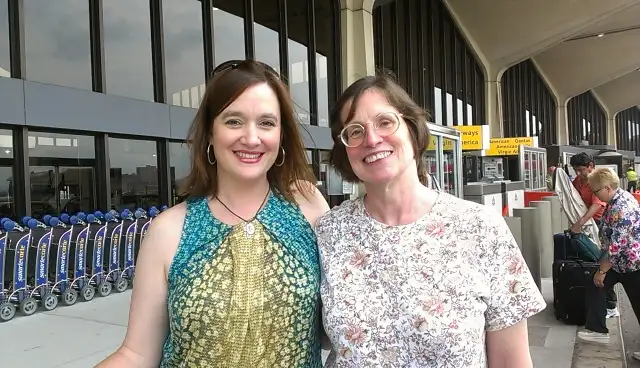

I’m just home from a journey that was sprinkled with countless moments of bliss and speckled, too, with a fair amount of frazzlement (a word I just invented on account of how things went down).
There’s so much to share, but it seems the best way to begin is not at the beginning, but the end, since the end best brings home the point of why I am so.very.grateful.to.be.back.in.Fargo, despite having had a lovely time (we’ll go there later).
I still want to start on a high note, though, and it’s obviously this: Elly, my fifth cousin (yes, fifth!). Here we are at the Newark, N.J., airport just before things turned sour. We are genuinely happy here, having just shared a delightful first-meeting lunch back at the hotel where I’d been staying.
 |
| My fifth cousin Elly and I at the Newark International Airport |
{kind=link}
Elly and I met through email April 10, 2013. The email began this way: “Hello! I think that we are cousins. I was googling for the name of your great grandfather, Patrick E Byrne, and I found your blog post in which you wrote about finding his book ‘Soldiers of the Plains’ in a box…I have been working on my (our) family’s genealogy with another cousin for several years.”
Through her research, Elly has discovered that, from all evidence so far, our great-great-great-grandparents (pa on her side, ma on mine) were siblings. Her great-great-great grandpa William Mulry Jr. and my great-great-great-grandma Catherine Mulry, who both lived in Ireland in the late 1700s, likely emerged from the same womb.
In other words, if either of them and any of their children and their children and so on had not been born, this photo would not have happened. But they were and here we are on August 9, 2013, almost four months to the day after our first meeting.
It was just after this photo was snapped that the trouble began. After I said goodbye to Elly with a hug, I stepped into the airport, and, at the kiosk to collect my boarding pass, was stopped cold by a note saying my confirmation number did not exist.
It would turn out that my flight had been canceled altogether, though I hadn’t received an email alert, and by the time I realized the 800-number call that had come in during our lunch together was the airline telling me my flight was not only no more, but I’d been diverted to JFK for another flight, it would be too late for me to get there.
I will skip most details, but I’ve described the next 10 hours (the length of time I spent in Newark’s airport) as harrowing, in part because I arrived sleep-deprived and had nothing left – I was on empty. For several of those hours, Elly, my long-lost cousin, was right by my side. When I called her to tell her of the mix-up, and she heard the anxiety in my voice, she reversed her plans and car’s direction and headed back to Newark to offer moral and physical support.
I stood in lines, and she did, too…one after the other. It was a hot mess that didn’t end when Elly and I parted. When I finally got on the plane that was to take me home, another delay met the already weary travelers, and then came the announcement that the plane was smoking somewhere in the cockpit, and we had to get off.
I’d arrived at the Newark airport at 2 p.m., and our second plane (not even on the original airline, not even with the original first destination of Chicago) finally boarded around midnight. We arrived in Denver around 2 p.m., haggard and desperate for sleep.
This is where things begin to turn around. In the end, the airline came through (though not ruffle-free) and I ended up walking into this hotel room around 3:30 a.m. Saturday. Despite the difficulty of long lines, confusion, throngs of people, tense airline clerks, and many sighs of frustration…my head hit a soft pillow and I knew it was going to end up okay.
{kind=link}
Denver, though not in the original plan, has been a good city to me, and being there at least assured me: I was one step closer to home.
{kind=link}
The next morning…!
{kind=link}
Once I was reunited with the carry-on that had been pulled away from me and set on a wholly different course in Newark (despite it being a “carry-on”), everything merged in the end, and there were treasures awaiting.
The starts of an iris and day lily plants all the way from New Jersey, courtesy of Elly’s garden.
{kind=link}
And a stack of papers telling the story of my ancestors, which Elly had dug up and copied as a gift to me.
{kind=link}
{kind=link}
This one tells of the mining going on when my great-great-grandfather Joseph Dietrich was an entrepreneur in Bismarck, N.D., from the March 29, 1885, edition of the The Bismarck Tribune:
“At least seventy-five people went from this city to the mines yesterday and the opinions expressed by those who have returned are various and conflicting. The yellow mineral continues to loom up as plentiful as ever and the owners of the land grow sanguine, as the golden gossip spreads.
“It would not be right for the TRIBUNE to denounce the discovery as valueless, nor would it be wise to state positively that they are rich in gold, until an official assessment has been made, or the quartz has been passed upon by experienced miners. If the action of the majority of those who have seen the mines is any criterion, there is good reason to believe that the find is immensely rich. The only proper and fair way is to give the mines a chance and let them speak for themselves.
“Joseph Dietrich has decided to establish a bus line between the city and the mines, and a concord coach will leave for the scene of the excitement this morning. All aboard!”
And so, as it turns out, the adventure ends very well, and this is just the beginning, though for now, the end.
Q4U: Have you ever experienced a traveling nightmare? What lesson did you take from it?